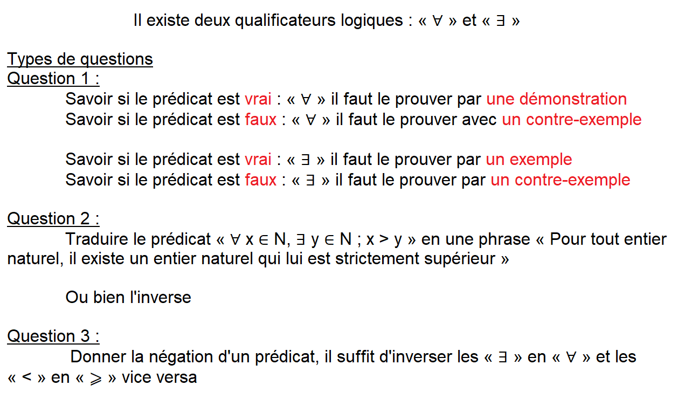

<!DOCTYPE html>
<html>
<head>
	<meta charset="utf-8">
	<title>Projet Révision</title>
	<meta name="viewport" content="width=device-width, initial-scale=1.0">
	<link rel="stylesheet" href="css/bootstrap.css">
	<link rel="stylesheet" type="text/css" href="css/fond.css">
</head>
<body>
	<script src="https://unpkg.com/@popperjs/core@2.4.0/dist/umd/popper.min.js"></script>
	<script src="js/bootstrap.js"></script>

</body>

<table width="100%" cellpadding="0" cellspacing="0">
   <tr> 
      <td class="titre">Projet Révision SIO<br>
      <span id="texteNiveau2" class="texteNiveau2">L'argile dit-elle à son potier : "Que fais-tu ?".</span><br>&nbsp;
      </td>
   </tr>
</table>
<table width="80%" cellpadding="0" cellspacing="0" class="tabMenu" align="center">
   <tr>
      <td class="menu"><a href="mathsobl.html">Maths obl.</a></td>
      <td class="menu"><a href="index.html">SISR</a></td>
   </tr>
</table>
<br>
<div class="bordure" align="center">
	<div class="paragraphe">
				
	</div>

</div>
</html>


<!-- //le texte 
                          Il existe deux qualificateurs logiques : « ∀ » et « ∃ »

Types de questions
Question 1 :
            Savoir si le prédicat est vrai : « ∀ » il faut le prouver par une démonstration
            Savoir si le prédicat est faux : « ∀ » il faut le prouver avec un contre-exemple

            Savoir si le prédicat est vrai : « ∃ » il faut le prouver par un exemple
            Savoir si le prédicat est faux : « ∃ » il faut le prouver par un contre-exemple

Question 2 :
            Traduire le prédicat « ∀ x ∈ N, ∃ y ∈ N ; x > y » en une phrase « Pour tout entier naturel, il existe un entier naturel qui lui est strictement supérieur »
            
            Ou bien l'inverse

Question 3 :
             Donner la négation d'un prédicat, il suffit d'inverser les « ∃ » en « ∀ » et les « < » en « ⩾ » vice versa 

